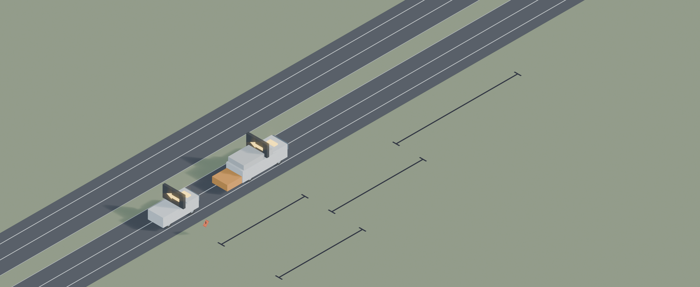
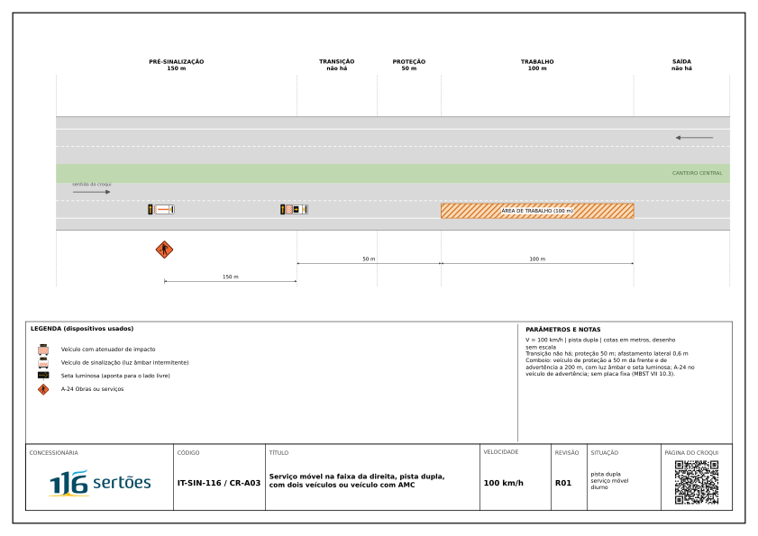

RASCUNHO R01 Revisão em elaboração, ainda não aprovada. Use somente como referência. Registrar decisão
Vista 3D esquemática

Planta cotada (vista auxiliar)
Croqui diurno



Resumo da aplicação
Resumo provisório: campos do catálogo de croquis, sem o texto completo da IT.
Descrição
Serviço móvel na faixa 2 (direita) de pista dupla: roçada de bordo com máquina na pista, limpeza de dispositivos, reparo de defensa em movimento.
Parâmetros
| Via | dupla |
| Velocidade | 100 km/h |
| Tipo de serviço | móvel |
| Faixas por sentido | 2 |
| Extensão do trabalho | 100 m |
Dispositivos mínimos
- veículo com AMC e seta luminosa ou veículo de sinalização com seta (proteção, 50 m)
- veículo de sinalização com seta luminosa e A-24 (advertência, 200 m)
Notas
Comboio sem placa fixa; seta luminosa aponta para a esquerda (lado livre). Sem AMC, usar dois veículos de sinalização, como no CR-A01.
Checklist
LV-02 · Durante a ocupação, por turno (16 itens)
Início de cada turno; depois de chuva forte, vento forte ou impacto; inspeções operacionais e de segurança. Preenche: Responsável pela frente ou inspetor.
- Croqui implantado é o indicado no plano
- Primeira placa A-24; R-19 depois dela, em degraus de até 20 km/h; distância nas placas
- Placas nas posições do plano, com no mínimo 100 m entre placas em via rural e 50 m em via urbana
- Sinalização permanente conflitante coberta
- Transição com o comprimento do plano, fora de curva, crista e tabuleiro de OAE
- Espaçamento de cones, tambores e balizadores igual ou menor que o do plano
- Seta luminosa na faixa fechada, apontando para o lado livre; nenhuma no acostamento
- Área de proteção livre de pessoas, material e veículos
- Separação da obra como no plano, no limite da área ocupada; faixa aberta de no mínimo 3,00 m
- Barreira rígida interligada, sem blocos soltos, onde o plano a exige (longa duração junto a faixa a 60 km/h ou mais, ou desnível)
- Zona de trabalho dentro da extensão do plano (no máximo 1.000 m abaixo de 100 km/h)
- Veículos da obra na área de trabalho; veículo de sinalização à distância do item 6.4 dela, se previsto
- Transição posterior, FIM DAS OBRAS e R-19 de retorno na posição do plano
- Trabalhadores com vestimenta de alta visibilidade, de frente para o tráfego quando a tarefa permite
- Dispositivo deslocado, tombado ou danificado reposto; placa suja limpa; pista sem material da obra
- PMV móvel ativo no início da pré-sinalização, quando o plano o exige
LV-08 · Serviço móvel (13 itens)
Início do serviço móvel e cada mudança de trecho. Preenche: Responsável pela frente.
- Na faixa, comboio sem placa fixa, com a A-24 no veículo de advertência; no acostamento, pré-sinalização fixa de 500 m com A-24 e R-19
- Veículo de proteção a 50 m e veículo de advertência a 200 m da frente, com luz âmbar intermitente
- Veículo de proteção com AMC ou, sem AMC, veículo de sinalização; na faixa, seta luminosa ligada nos dois veículos, apontando para o lado livre
- Veículo de proteção freado, com as rodas alinhadas, entre o fluxo e a equipe
- Distância de proteção mantida durante todo o deslocamento
- Ninguém trabalha nem circula entre o veículo de proteção e o veículo de serviço
- Serviço no acostamento: nenhuma seta luminosa; veículos com luz âmbar intermitente
- Equipe a pé do lado do acostamento, de frente para o tráfego, sem atravessar a pista
- Roçada: tela de proteção quando o tráfego passa perto da máquina
- Pintura: cones sobre a tinta fresca, recolhidos após a secagem com o comboio protegendo
- Parada no mesmo ponto além do previsto no plano: frente passa para a família B, com sinalização fixa
- Serviço móvel na faixa à noite só com plano específico
- Encerramento: veículos com seta ligada até sair da faixa; placas fixas recolhidas, quando houver, e CCO avisado
Todos os croquis · Revisão R01